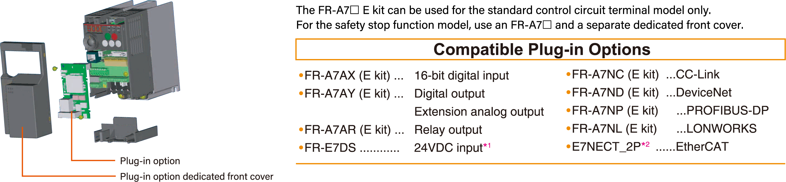
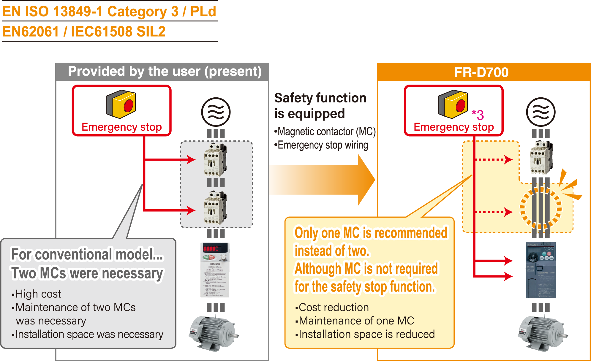
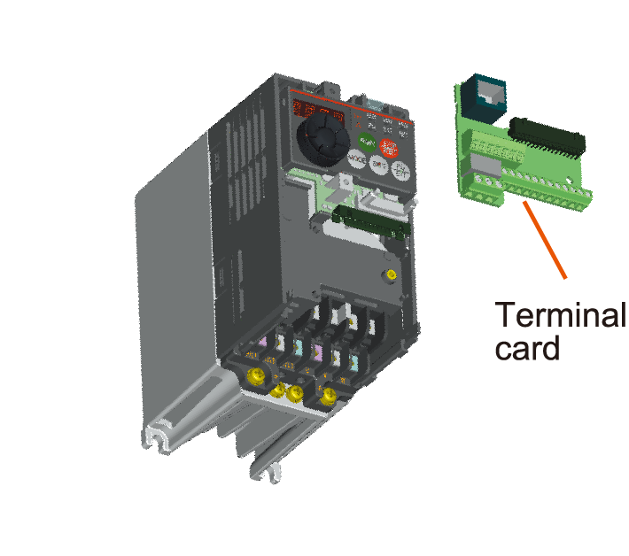

Inverters-FREQROL-E Series -FREQROL-E700- Enhanced expandability

A variety of plug-in options are mountable
Plug-in options supporting digital input, analog output extension, and a variety of communications provide extended functions which is almost equivalent to the FR-A700 series. (One type of plug-in option can be mounted.)
[ For the FR-E700 series, use the "FR-A7□□E kit" which is a set of optional board and dedicated front cover.]

- *1This option is available for the safety stop function model only. The dedicated front cover is enclosed with the option.
- *2Manufactured by HMS Industrial Networks AB. (Only compatible with dedicated EtherCAT communication models)
Safety stop function (FR-E700-SC)
- Spring clamp terminals are adopted as control circuit terminals. Spring clamp terminals are highly reliable and can be easily wired.
- The FR-E700-SC series is compliant to the EU Machinery Directive without the addition of previously required external devices. Operation of an external Emergency Stop device results in a highly reliable immediate shutoff of the D700's output to the motor.
This safety stop function conforms to the following standards.

- *3 Approved safety relay unit
Control terminals are selectable according to applications
Terminal cards other than standard terminal such as two port RS-485 terminal are available as options.
A terminal card is removable and can be easily replaced from a standard terminal card.

Various kinds of networks are supported
- EIA-485 (RS-485), MODBUS®RTU (equipped as standard), CC-Link, PROFIBUS-DP, DeviceNet™, LONWORKS®, EtherCAT® (optional)
- Network-compatible inverters, the CC-Link communication model (FR-E700-NC) and the FL remote communication model (FR-E700-NF), are also available.
- A network compatible inverter, the Ethernet communication function model (FR-E700-NE) is now available. CC-Link IE Field Network Basic, MELSOFT / FA product connection and MODBUS/TCP supported.
Environment-conscious filter options
- Filterpack FR-BFP2 (the package of the power factor improving DC reactor, common mode choke, and capacitive filter) is available for compliance with the Japanese harmonic suppression guidelines.
- A noise filter option for compliance with the EMC Directive (EN61800-3 2nd Environment Category C3) is also available.